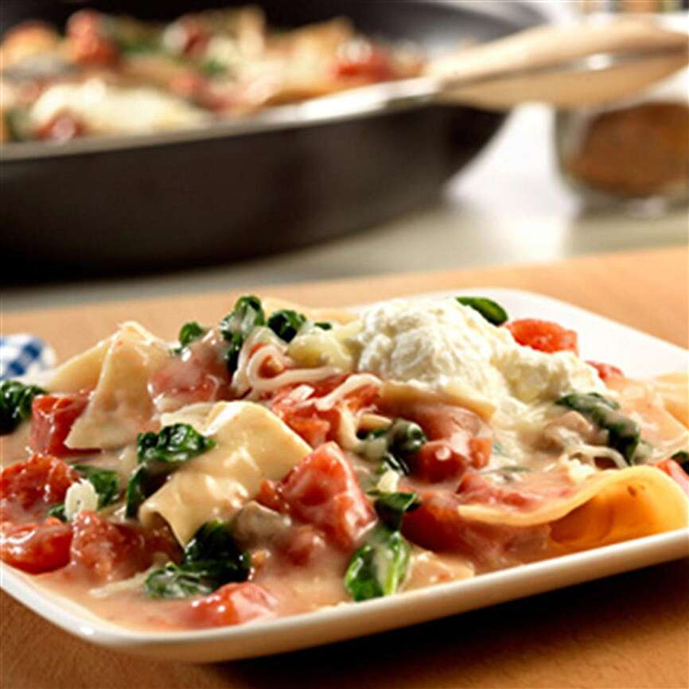

My Wife's Lasagna

Great as dinner, almost better as leftovers
This lasagna dish is a staple in our house. We make two to three times a month. For a family of three, it will last use around six meals.
It is more time consuming than it is complicated, but it is well worth it. Use your favorite lasgna noodles. We are not picky, but we typically use Barilla. Your ground meat of choice, which is typically beef for us. Three different types of cheese! And lastly, your favorite pasta sauce. We like it spicy, so we use Arriabatta.
We uses these ingredients
- 1 box of Lasagna Noodles
- 1 lbs of Ground Beef, or Turkey
- 1 container of Ricatta Cheese
- 1 bag of shredded Pramesan Cheese
- 1 bag of shredded Mozzeralla Cheese (avoid low mositure)
- 1 Sweet Onion, chopped or minces
- 5 cloves of minced Garlic - we love garlic!
- 1 16oz jar of Arriabatta Sauce
- Some Parsely
Steps
- Preheat oven to 375 degrees
- Boil the water, don't forget to add salt
- While you wait for the water to boil, heat some olive oil in a pan, and your onion and garlic.
- Add lasagna noodles to boiling water. Stir gentally as needed.
- In a bowls, add ricatta cheese, milk, and parsely and mix together.
- Once the onions are close to transparent, add the ground beef.
- Add Arriabatta sauce once the meat has browned and stir occasionally. Reduce to simmer.
- Drain noodles once they are done.
- TIP Leave some water in the pot so they do not all stick together
- In a glass dish layer in this order
- Noodle
- Sauce
- Ricatta cheese mix
- Paramesan and Mozzeralla
- REPEAT
- On the last layer, do not include the ricatta cheese mix
- Cover the dish with tinfoil and place in the oven for 45 minutes.
- After 20 minutes, remove the tinfoil
- When done, serve and add additional cheese and parsley